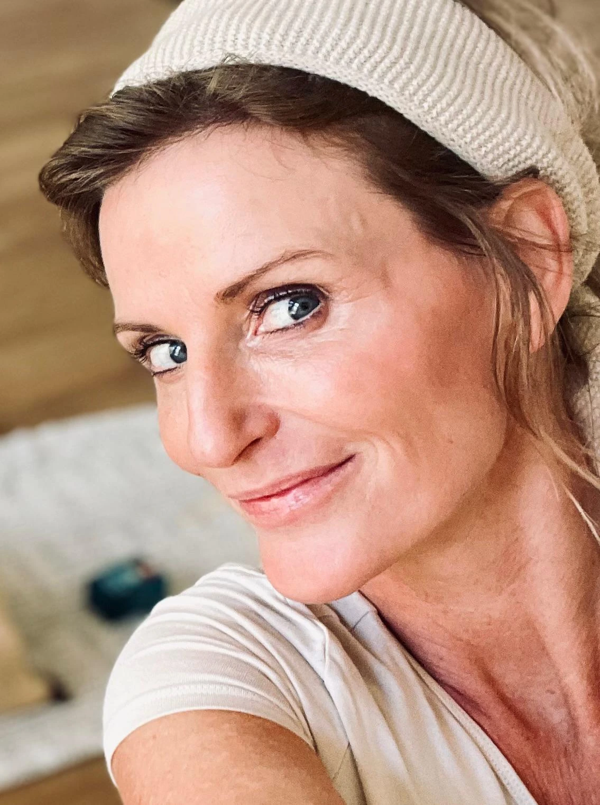
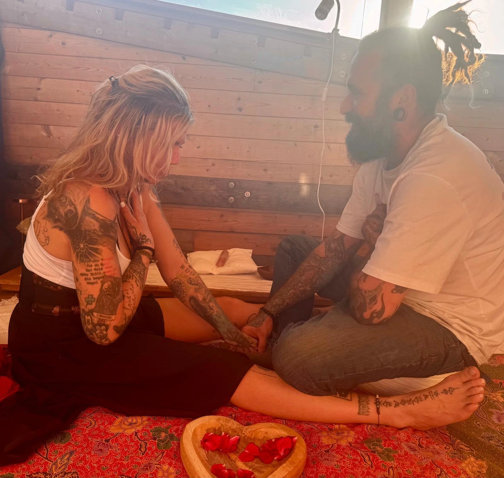

Shiatsu
Achtsamer Druck, sanfte Bewegung und ein Moment, in dem dein Körper im Mittelpunkt steht.
- Erstbehandlung · 90 Min.
- 119 €
- Sitzung · 60 Min.
- 89 €
- Sitzung · 90 Min.
- 119 €
Die Erstbehandlung dauert immer 90 Minuten.
ZUHAUSE IN MIR …
Raus aus dem Kopf. Ankommen im Körper.
Und wieder spüren, was dir guttut.
Mit achtsamer Berührung und offenem Herzen begleite ich dich ein Stück auf deinem Weg zu dir selbst.

WENIGER MÜSSEN. MEHR SPÜREN.
Im Alltag sind wir oft überall – nur nicht bei uns selbst. Meine Arbeit lädt dich ein, innezuhalten. Mit Zeit für deinen Körper, deine Gedanken und das, was dich gerade bewegt.
MEINE ARBEIT MIT DIR
So unterschiedlich wie wir Menschen
sind auch unsere Wege.
Achtsamer Druck, sanfte Bewegung und ein Moment, in dem dein Körper im Mittelpunkt steht.
Die Erstbehandlung dauert immer 90 Minuten.
Meine Herzensarbeit: Raum für deine innere Weisheit, neue Perspektiven und dein authentisches So-Sein.
Wohltuende Wärme und achtsame Arbeit im Bereich von Narben. Gemeinsam besprechen wir, was zu dir passt.
FÜR BABYS & KINDER BIS 12 JAHRE
Achtsame Berührung für die Kleinen. Mit Ruhe, Zuwendung und Raum für das eigene Tempo.
Alle angegebenen Preise sind Standardpreise. Zeitlich begrenzte Aktionen – wie der FLUSSwärts-3er-Block – werden beim jeweiligen Angebot gesondert ausgewiesen.
NEU · DEINE AUSZEIT AM WASSER
Mit FLUSSwärts lade ich dich ein, meinen neuen Rückzugsort im Hausboot & an der Seebühne kennenzulernen. Mitten in der Natur. Mit Zeit für Berührung, Bewusstsein und dich.
Ein gemeinsamer Prozess. Drei bewusste Auszeiten.
ZEIT FÜR EUCH. RAUM FÜR NÄHE.
Schenkt euch bewusst Zeit füreinander. In einem individuell begleiteten Ritual begegnet ihr euch achtsam, spürt eurer Verbindung nach und lasst den Alltag für einen Moment draußen.
Eine liebevolle Auszeit für euch beide.
Ganz in eurem Tempo.

DEIN KLEINER MOMENT. JETZT.
Wenn du magst, nimm dir drei ruhige Atemzüge.
In deinem Tempo. Ohne etwas erreichen zu müssen.
Leises Wasserplätschern begleitet deine Atempause.
DER MENSCH HINTER DER BERÜHRUNG
Seit 2000 begleite ich Menschen mit Körperarbeit und persönlicher Zuwendung. Was mich dabei trägt: die Neugier auf den Menschen, der mir gegenübersitzt.
Meine Grundlage ist die Ausbildung zur diplomierten Shiatsu-Praktikerin an der Internationalen Shiatsu Schule Österreich. Dazu kommen unter anderem Mentaltraining, Energy Coaching und die Begleitung in unterschiedlichen Lebensphasen.
Du musst nichts leisten und nichts darstellen. Wir nehmen uns Zeit, hören hin und finden gemeinsam heraus, was für dich gerade stimmig ist.
PERSÖNLICHE ERFAHRUNGEN
Ich hab mich sofort wohl mit ihr gefühlt.
Ich fühle mich sehr gut aufgehoben.
Daniela ist äußerst kompetent.
Auszüge aus persönlichen Erfahrungsberichten.
ZUSAMMEN WACHSEN
Bewegung. Rituale. Bewusste Momente.
Einblicke in meine gemeinsame Arbeit.
GUT ZU WISSEN
Zu Beginn sprechen wir darüber, was dich gerade beschäftigt und was du dir wünschst. Shiatsu findet bekleidet auf einer Matte statt. Mit Händen und sanften Bewegungen passe ich die Berührung an dich an. Zum Abschluss bleibt Zeit zum Nachspüren.
Bequeme, bewegungsfreundliche Kleidung und frische Socken sind ideal. Alles Weitere besprechen wir bei der Terminvereinbarung.
Im Hausboot & an der Seebühne (Murbergstraße 194, 8072 Enzelsdorf), im Seminarhaus am Eckhof (Murbergstraße 155, 8072 Enzelsdorf) oder nach Vereinbarung bei dir zu Hause. Für Hausbesuche in Graz und GU Süd kommen 35 € inklusive Anfahrt hinzu.
Wähle „Deine Auszeit“ und teile mir deinen Wunschtermin mit. Die Anfrage wird als E-Mail in deinem Mailprogramm vorbereitet. Erst wenn ich deinen Termin persönlich bestätige, ist er vereinbart. Du erreichst mich auch telefonisch unter +43 664 1034409.
Ruf mich gerne an, wenn du unsicher bist. Wir besprechen gemeinsam, ob mein Angebot zu deinen Wünschen passt. Shiatsu und Mentaltraining ersetzen keine ärztliche Diagnose, Psychotherapie oder medizinische Behandlung.
DER ERSTE SCHRITT DARF LEICHT SEIN.
Ich freue mich, von dir zu hören.
+43 664 1034409daniela@shiatsu-kellner.at Instagram · soul_life_power